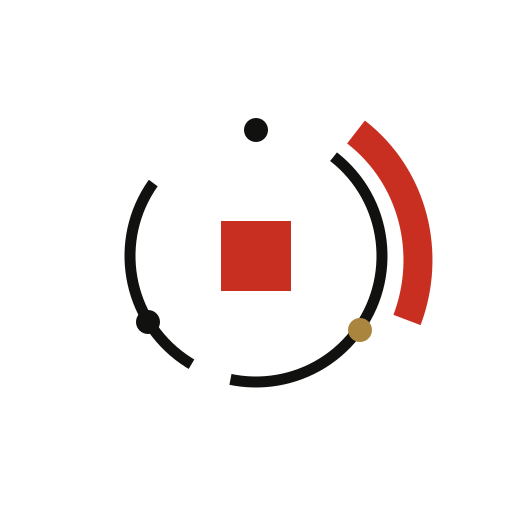

Сертификат от опасного CA
Подпись математически верна

TENGUeMudhra: почему отозванный сертификат ещё может работать.
Один сертификат. Разный результат.
В браузере — отказ.
Срез на 22.10.2026 · Схема, не тест вашего устройства. Dennis Jackson / checks

Сертификат связывает имя сайта с его открытым ключом. Издатель заверяет эту связь.
В норме только издатель может поставить свою цифровую подпись.
Упрощено: доверие к издателю идёт по цепочке до корня в хранилище клиента. Алгоритм шифрования не взломан. Mozilla / incidentAli Mosajjal / analysisRFC 5280 / certificates
Для подмены нужны две вещи: соединение приходит к атакующему, а клиент принимает его сертификат.
Обычно приложение соединяется с настоящим сервисом.
Схема риска, не воспроизведённая атака. Ключ CA сам по себе не раскрывает старые сессии с прямой секретностью. RFC 8446 / TLSCloudflare / response
Проверяемый сертификат одинаковый. Правила программы — разные.
Подпись математически верна
Учитывает блокировку CA
Старая цепочка ещё допустима
Правильная подпись ещё не означает, что издателю по-прежнему можно доверять.
Иллюстрация различий, не результат проверки любого curl или всей ОС. Конкретная сборка и настройки имеют значение. Google / responseDennis Jackson / checkscurl / verification
Тот же тестовый сертификат. Меняем только защиту работающей программы.
Обновлена
Своя TLS-библиотека / сертификаты
Обновление системы не обязательно меняет встроенные зависимости приложения.
Иллюстрация исправления. Нужные действия зависят от приложения; следуйте инструкции его поставщика. Cloudflare / responsecurl / verification
Запускаем проверку из нужного приложения, а не из соседнего браузера.
Защита этого пути не сработала
Проверить причину и цепочку
О защите ничего не говорит
Тестовые адреса предъявляют сертификаты с затронутыми цепочками.
Полный набор проверок — по ссылке. Страница их не запускает. Не отключайте проверку сертификата ради успешного запроса. Dennis Jackson / checks
Проверяй программу, которой действительно доверяешь данные.


Найти реальную точку проверки.
Источники и инструкции — по ссылкам. Срез инцидента на 22.10.2026.